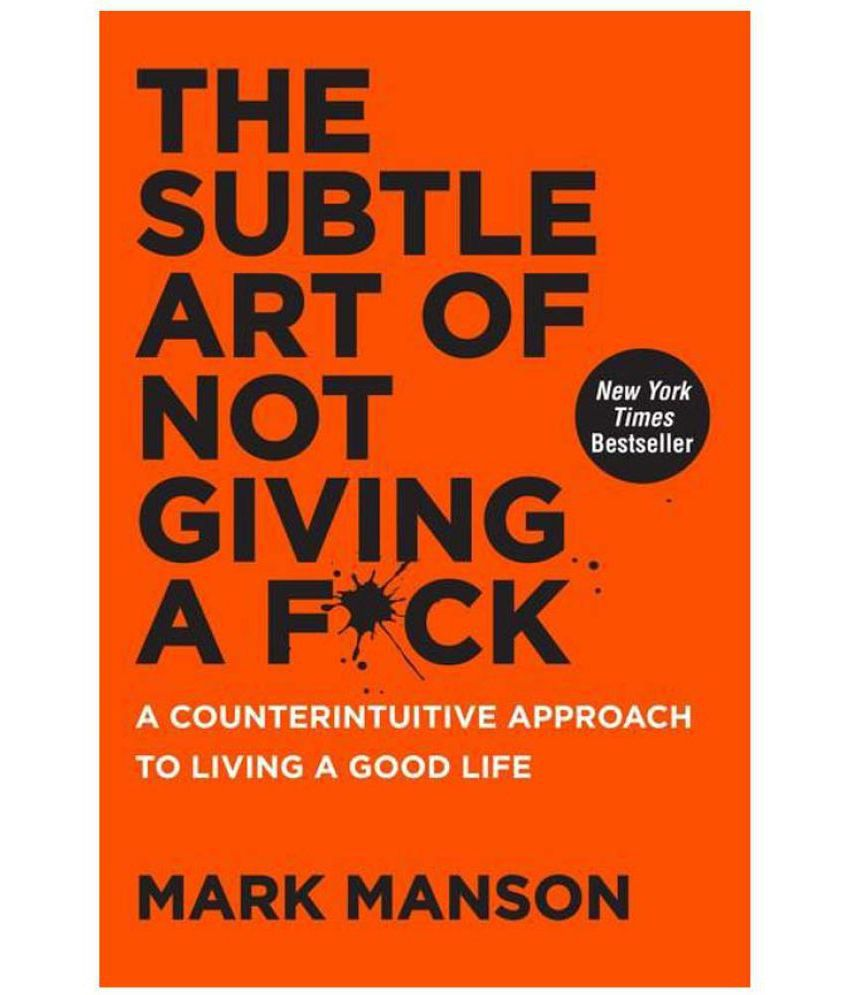
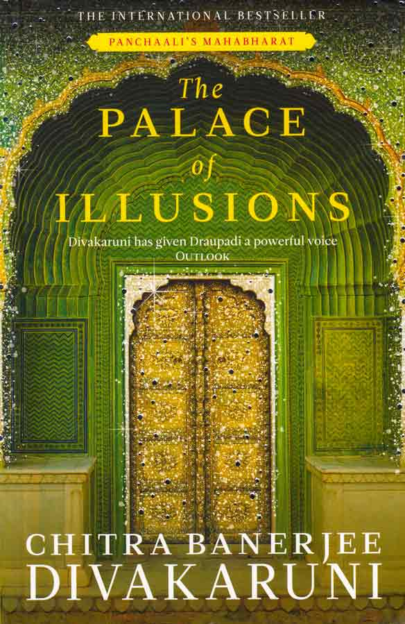

Book Gallery
Rich dad Poor dad

by Robert T Kiyosaki
Rich Dad Poor Dad is Robert's story of growing up with two dads — his real father and the father of his best friend, his rich dad — and the ways in which both men shaped his thoughts about money and investing.
Atomic habits

by James Clear
Atomic Habits is the definitive guide to breaking bad behaviors and adopting good ones in four steps, showing you how small, incremental, everyday routines compound into massive, positive change over time.
IKIGAI
by Hector Garcia & Francesc Miralles
Ikigai is a Japanese concept that means your 'reason for being. ' 'Iki' in Japanese means 'life,' and 'gai' describes value or worth. Your ikigai is your life purpose or your bliss. It's what brings you joy and inspires you to get out of bed every day.
The Alchemist

by Paulo Coelho
The Alchemist is a classic novel in which a boy named Santiago embarks on a journey seeking treasure in the Egyptian pyramids after having a recurring dream about it and on the way meets mentors, falls in love, and most importantly, learns the true importance of who he is.
The god of small things

by Arundati Roy
The God of Small Things is a family drama novel written by Indian writer Arundhati Roy. Roy's debut novel, it is a story about the childhood experiences of fraternal twins whose lives are destroyed by the "Love Laws" prevalent in 1960s Kerala, India.
The subtle art

by Mark Mansion
The Subtle Art of Not Giving a Fuck argues that individuals should seek to find meaning through what they find to be important and only engage in values that they can control. Values (such as popularity) that are not under a person's control, are, according to the book, 'bad values'.
The White Tiger

by Aravind Adiga
The White Tiger is a novel by Indian author Aravind Adiga. It was published in 2008 and won the 40th Booker Prize the same year. The novel provides a darkly humorous perspective of India's class struggle in a globalized world as told through a retrospective narration from Balram Halwai, a village boy.
The Palace of Illusions

Chitra Banerjee Divakaruni
The novel traces Panchaali's life, beginning with her magical birth in fire as the daughter of a king before following her spirited balancing act as a woman with five husbands who have been cheated out of their father's kingdom.